Avventure di provvidenza quotidiana
5pani 2pesci
Ci sposiamo!
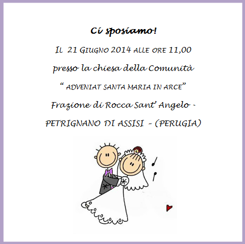
Perchè abbiamo scelto di sposarci?
Il matrimonio è la nostra vocazione! Parlarvi del nostro cammino e di tutto quello che abbiamo vissuto prima di incontrarci, sarebbe uno straordinario canto di Lode, un dolcissimo Magnificat, ma troppo lungo da descrivere qui. Padre Cornelio, che ci segue, ci ha detto di scrivere tutto. L’abbiamo fatto ed abbiamo riempito mezzo quaderno degli appunti! Non spaventatevi, non vogliamo annoiarvi! ;)
Pensiamo di poter riassumere tutta la nostra storia con un bellissimo passo tratto da La bottega dell’orefice di Karol Wojtyla:
A un certo punto i nostri sguardi si sono incontrati – il mio e quello del vecchio Orefice. Ho avuto allora la sensazione che Lui non solo stesse sondando i nostri cuori ma che cercasse anche di versarvi dentro qualcosa.Ci siamo trovati al livello del Suo sguardo, anzi, al livello della Sua vita. La nostra intera esistenza stava davanti a Lui. Il Suo sguardo ci comunicava dei segni ma in quel momento non eravamo in grado di percepirli in tutta la loro pienezza … — però quei segni riuscirono a penetrare fino nel fondo dei nostri cuori. E … ci siamo messi in cammino nella direzione indicataci perché questo filo è diventato l’ordito di tutta la nostra vita.
Il perchè di una data.
All’inizio, la scelta della fatidica data è stata quasi “accidentale”, ma, dal momento che crediamo che nulla sia veramente avvenuto per caso, scopriamo il significato di questo giorno. il 21 Giugno è il solstizio d’estate, quindi il giorno più luminoso dell’anno (come ci ha ricordato la nostra amica Chiara). Si tratta di un giorno considerato sacro in molte religioni e magico per molte culture. Tra il 21 e il 22 Giugno il sole cambia direzione, simboleggiando l’inizio di un nuovo periodo di vita. Il passaggio alla bella stagione era salutato fin dall’antichità con canti e balli. E’ il giorno più lungo dell’anno, perchè anche la nostra festa sia la più lunga possibile! Inoltre, in onore di Carmine, un’amica francese, Michele, ci ha detto che lo stesso giorno si celebra la festa della musica. Il 21 Giugno si festeggia San Luigi Gonzaga, educato alle armi e poi diventato gesuita, patrono della gioventù. E non dimentichiamo che il 2014 è stato proclamato da Papa Francesco anno della Famiglia. Insomma, cosa chiedere di più?
Perchè il matrimonio cristiano?
Vorremo testimoniare la serietà e la bellezza di questo Sacramento, che non è nè una bella chiesa nè una festa grandiosa. Abbiamo scelto di non preoccuparci troppo del vestito, degli addobbi o delle bomboniere. Chi si è sposato o sta per farlo sa quanto sia stressante organizzare una festa perfetta: ci si perde in un vortice di paganità che ti allontana dal vero senso di quel giorno (il tema; il colore dominante; il segnaposto; il paggetto; i fiori; le prove trucco; ecc). Perdonateci,ma noi abbiamo scelto di pensare a ciò che succederà dal 22 Giugno in poi!
Condividiamo le parole che Papa Francesco ha rivolto al pellegrinaggio delle famiglie, nell’Ottobre del 2013 :
“Chi si sposa nel Sacramento dice: «Prometto di esserti fedele sempre, nella gioia e nel dolore, nella salute e nella malattia, e di amarti e onorarti tutti i giorni della mia vita». Gli sposi in quel momento non sanno cosa accadrà (…) Partono, come Abramo, si mettono in cammino insieme. E questo è il matrimonio! Partire e camminare insieme, mano nella mano, affidandosi alla grande mano del Signore. Mano nella mano, sempre e per tutta la vita! E non fare caso a questa cultura del provvisorio, che ci taglia la vita a pezzi! Con questa fiducia nella fedeltà di Dio si affronta tutto, senza paura, con responsabilità. Gli sposi cristiani non sono ingenui, conoscono i problemi e i pericoli della vita. Ma non hanno paura di assumersi la loro responsabilità, davanti a Dio e alla società. Senza scappare, senza isolarsi, senza rinunciare alla missione di formare una famiglia e di mettere al mondo dei figli. - Ma oggi, Padre, è difficile… -. Certo, è difficile. Per questo ci vuole la grazia, la grazia che ci dà il Sacramento! I Sacramenti non servono a decorare la vita - ma che bel matrimonio, che bella cerimonia, che bella festa!… - Ma quella è una decorazione! E la grazia non è per decorare la vita, è per farci forti nella vita, per farci coraggiosi, per poter andare avanti!”
Il luogo della cerimonia.
La cerimonia si svolgerà presso la chiesa della Comunità delle suore francescane dell’Adveniat, S. Maria in Arce. Il convento si trova a Rocca S.Angelo, frazione di Petrignano, a 13 km dal santuario della Porziuncola. Vi chiediamo un piccolo sforzo per raggiungere questa incantevole chiesetta del 1200, arroccata sulla collina. Per noi questo posto è ricco di significato: vi abbiamo fatto un bellissimo ritiro spirituale di coppia nell’Agosto scorso, dal quale è scaturita la scelta di sposarci e la data.
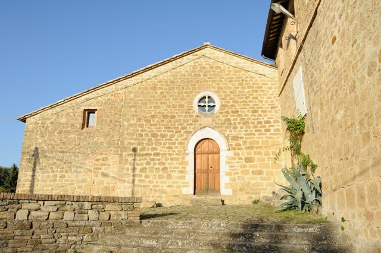 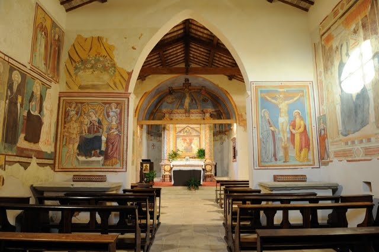 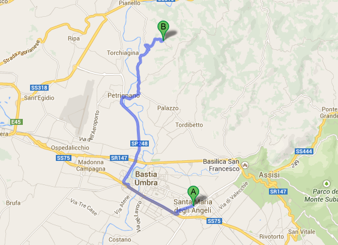
.Visualizza la mappa ingrandita.
Per saperne di più sulla comunità delle suore dell’Adveniat Santa Maria in Arce, cliccate sul seguente [link] (http://www.adveniatsantamariainarce.it/)
La veglia.
Stiamo organizzando un addio al nubilato/celibato un pò insolito,ma speciale!Ti chiediamo di pregare con noi e per noi, con la nostra testimonianza e con l’allegria della musica e dei canti. Ti aspettiamo il 20 Giugno alle ore 21,00 presso la cappella della casa “Laudato sii” delle suore francescane Angeline, in via Protomartiri Francescani 6, a Santa Maria degli Angeli.
Trovarla è facile: si tratta di un edificio che si trova alle spalle del santuario della Porziuncola.
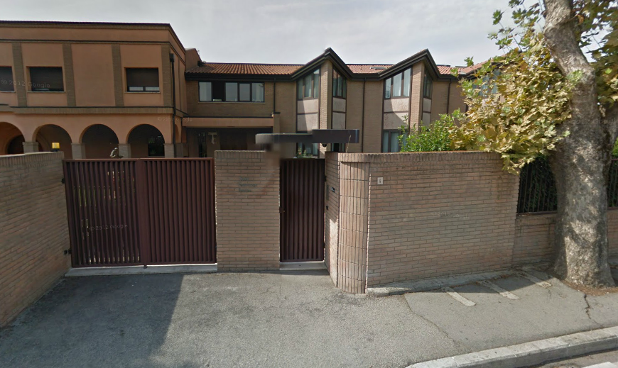 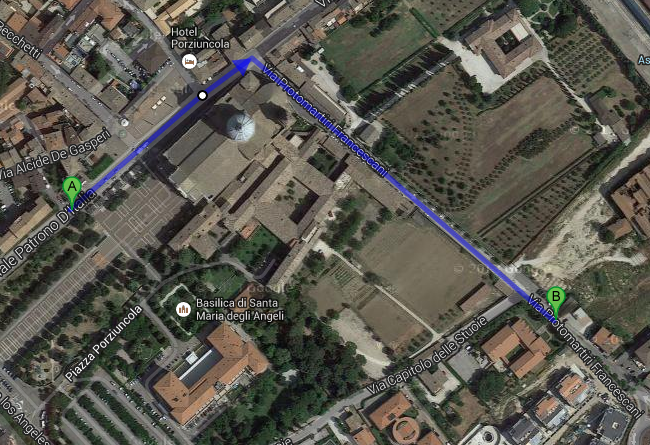
I testimoni (“I compari e le commari”).
Abbiamo scelto due membri delle nostre famiglie d’origine:
Massimo, fratello di Anita
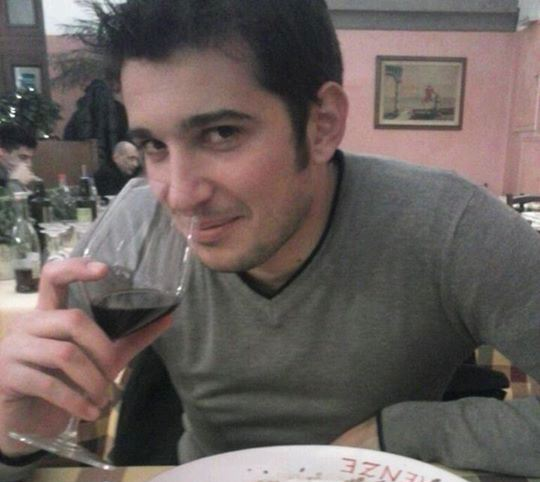
Tina , sorella di Carmine
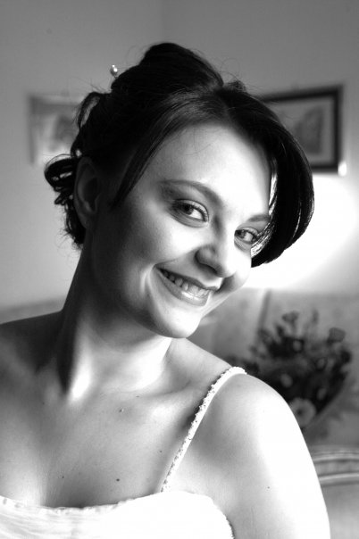
E due amici volontari, membri della nostra famiglia “spirituale”:
Sonia e Vincenzo.
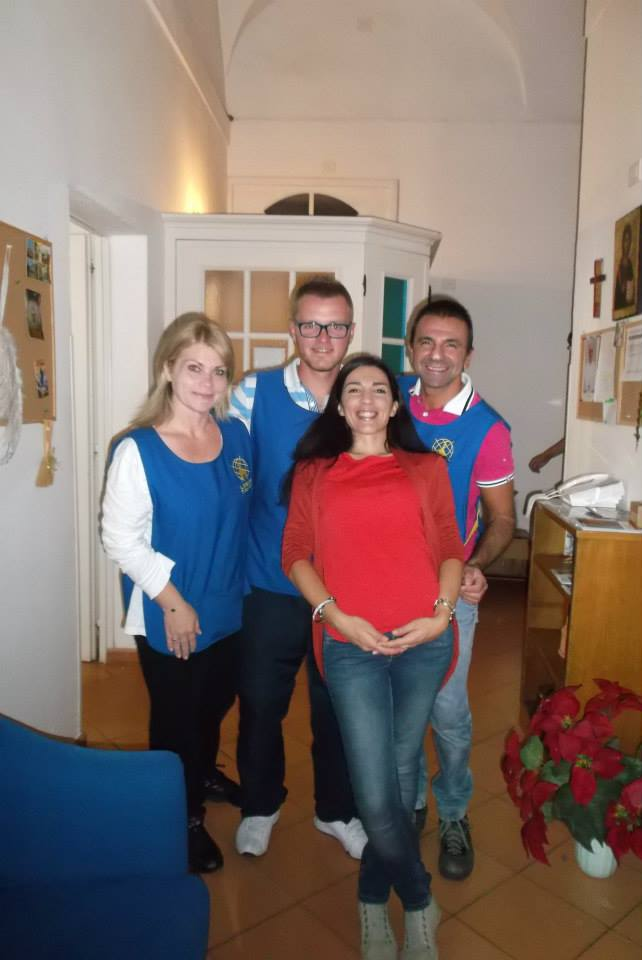
Abbiamo così intrecciato i fili della nostra storia, unendo il “prima” delle persone con cui siamo cresciuti e il “dopo” del nostro incontro e del fidanzamento. Il nostro Grazie va a tutti loro che continuano ad accompagnarci!
Il luogo da cui uscirà la sposa.
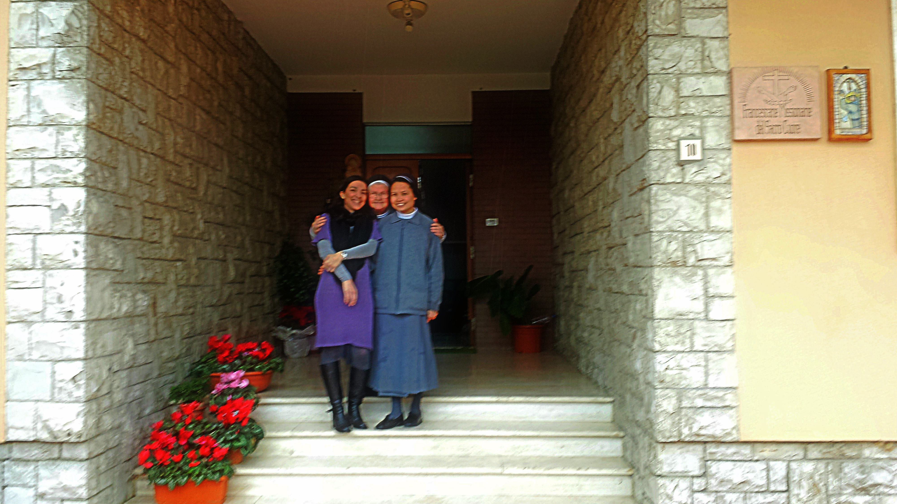
Anita ha scelto di prepararsi nella casa delle suore Francescane Missionarie del Sacro Cuore a Santa Maria degli Angeli. Più di un anno fa, queste religiose (in particolare sr Eliodora e sr Victoria) sono entrate a far parte della nostra vita, accompagnandoci con amorevole discrezione. La loro gioia e i loro sorrisi hanno illuminato e rafforzato la nostra vocazione matrimoniale. La loro casa è un rifugio accogliente e semplicissimo, come loro, che per noi sono mamme, sorelle e amiche.
Il desiderio di Anita è che siano queste suore, vere donne e vere spose, a preparare la sposa nel giorno più bello.
Per saperne di più su questo Istituto di suore e sulle loro missioni, cliccate sul seguente link
La coppia cristiana
(Tertulliano)
Che bella coppia formano due credenti che condividono la stessa speranza, lo stesso ideale, lo stesso modo di vivere, lo stesso atteggiamento di servizio!
Ambedue fratelli e servi dello stesso Signore senza la minima divisione nella carne e nello spirito, insieme pregano, insieme s’inginocchiano e insieme fanno digiuno.
Si istruiscono l’un l’altro, si esortano l’un l’altro, si sostengono a vicenda.
Stanno insieme nella santa assemblea, insieme alla mensa del Signore, insieme nella prova, insieme nella persecuzione, insieme nella gioia.
Non c’è pericolo che si nascondano qualcosa l’un l’altro, che si evitino l’un l’altro, che l’uno all’altro sian di peso.
Volentieri essi fan visita ai malati ed assistono i bisognosi.
Fanno elemosina senza mala voglia, partecipano al sacrificio senza fretta, assolvono ogni giorno i loro impegni senza sosta.
Ignorano i segni di croce furtivi, rendon grazie senza alcuna reticenza, si benedicon senza vergogna nella voce.
Salmi e inni recitano a voci alterne e fanno a gara a chi meglio sa cantare le lodi al suo Dio.
Vedendo e sentendo questo Cristo gioisce e ai due sposi manda la sua pace.
Là dove sono i due ivi è anche Cristo.
13 regole per un buon matrimonio
1. PERDERE LA PAURA DEL FUTURO. Cosa succederà domani? CHE CERCHERO’ DI AMARLA/O ANCORA DI PIU’!
2. LA PRECARIETA’, UNA BUONA ALLEATA. Lo schermo piu’ divertente della tua casa è il tuo sguardo.
3. E’ UNA COMUNIONE. Non pensare di essere più importante, ma neanche meno.
4. UN APPUNTAMENTO SACRO IN AGENDA. Riservare del tempo per parlare in uno scenario diverso.
5. 1,2,3…? Non ci pentiremo mai di averli tenuti.
6. E QUANDO ARRIVERANNO I MOMENTI BRUTTI? Rileggeremo la nostra storia con il motivo per cui ci amiamo.
7. PICCOLI PROGETTI. Una famiglia che ha futuro pensa nel futuro.
8. E SE LE COSE NON VANNO COME SPERAVAMO? Un sorriso e SI RICOMINCIA DI NUOVO!
9. NON IMPARERA’ MAI? No, non imparerà mai!ACCETTALO PER COME E’!
10. BALLARE E BALLARE. Lottiamo contro la routine quando manca il desiderio.
11. COGLIERE DI SORPRESA. Sorprendiamoci con piccoli dettagli.
12. L’AMORE E’ DONARSI. C’è avventura solo quando si scommette tutto sull’altra persona.
13. C’è ALLEGRIA E C’è DOLORE. E CON DIO E’ PIU’ FACILE!
E queste sono le regole di Papa Francesco
La “ricetta” di S. Escrivà de Balaguer
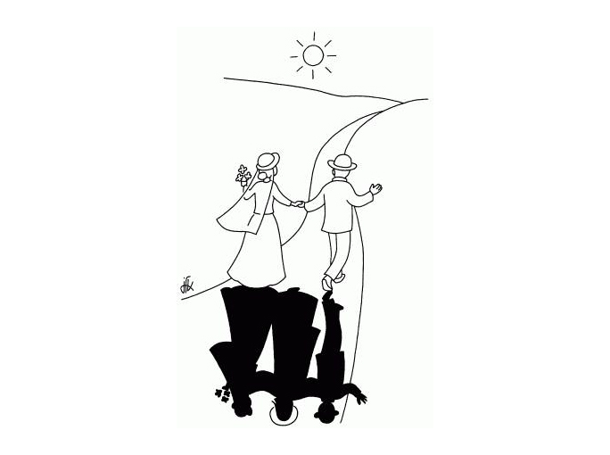
“Il matrimonio è fatto perché quelli che lo contraggono vi si santifichino e santifichino gli altri per mezzo di esso: perciò i coniugi hanno una grazia speciale, che viene conferita dal sacramento istituito da Gesù Cristo. Chi è chiamato allo stato matrimoniale, trova in esso, con la grazia di Dio, tutti i mezzi necessari per essere santo e per condurre verso il Signore le persone con cui vive.”
“Gli sposi cristiani devono avere la consapevolezza di essere chiamati a santificarsi santificando, cioè a essere apostoli; e che il loro primo apostolato si deve realizzare nella loro casa. Devono capire l’opera soprannaturale che è insita nella creazione di una famiglia, nell’educazione dei figli, nell’irradiazione cristiana nella società. Dalla consapevolezza della propria missione dipende gran parte dell’efficacia e del successo della loro vita: la loro felicità.
Non devono però dimenticare che il segreto della felicità coniugale è racchiuso nelle cose quotidiane, e non in fantasticherie. Consiste nello scoprire la gioia intima del ritorno al focolare, nell’incontro affettuoso coi figli; nel lavoro di ogni giorno a cui collabora tutta la famiglia; nel buon umore dinanzi alle difficoltà, che vanno affrontate con spirito sportivo; e anche nel saper approfittare di tutti i progressi offertici dalla civiltà per rendere la casa accogliente, la vita più semplice, la formazione più efficace.
Ripeto insistentemente a quanti sono stati chiamati da Dio a formare una famiglia di amarsi sempre; di amarsi con l’amore appassionato di quand’erano fidanzati. Ha un povero concetto del matrimonio - che è un sacramento, un ideale e una vocazione - colui che pensa che l’amore finisca quando iniziano le pene e i contrattempi che la vita porta sempre con sé. È proprio allora che il legame d’affetto si rafforza.”
“Domandate audacemente al Signore questo tesoro, la virtù soprannaturale della carità, per esercitarla fin nei più piccoli particolari.”
…e dal 22 in poi??!!
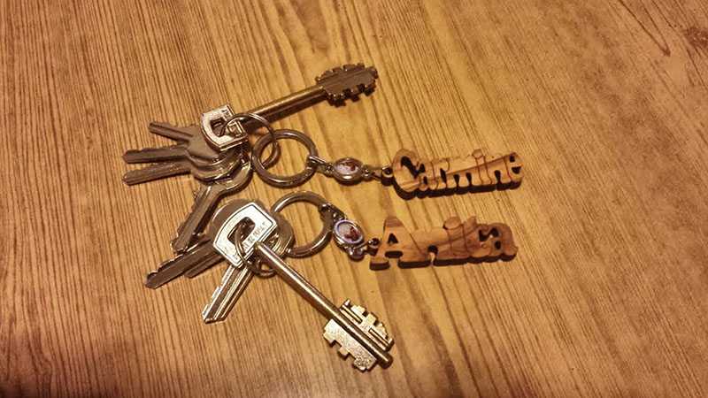
Chiunque ad un certo punto della vita mette su casa. La parte difficile è costruire una casa del cuore. Un posto non soltanto per dormire, ma anche per sognare. Un posto dove crescere una famiglia con amore, un posto non per trovare riparo dal freddo, ma un angolino tutto nostro da cui ammirare il cambiamento delle stagioni; un posto non semplicemente dove far passare il tempo, ma dove provare gioia per il resto della vita. (Sergio Bambarén da Il guardiano del Faro)
La promessa
Giovedì 20 Marzo è stato il “giorno della promessa” in chiesa e in Comune….
Ancora ringraziamo chi ci ha fatto giungere un pensiero, un messaggio, un fiore, un regalo e chi, con grande sforzo, ha fatto di tutto per essere presente!
Ecco qualche foto di uno dei nostri piccoli passi….
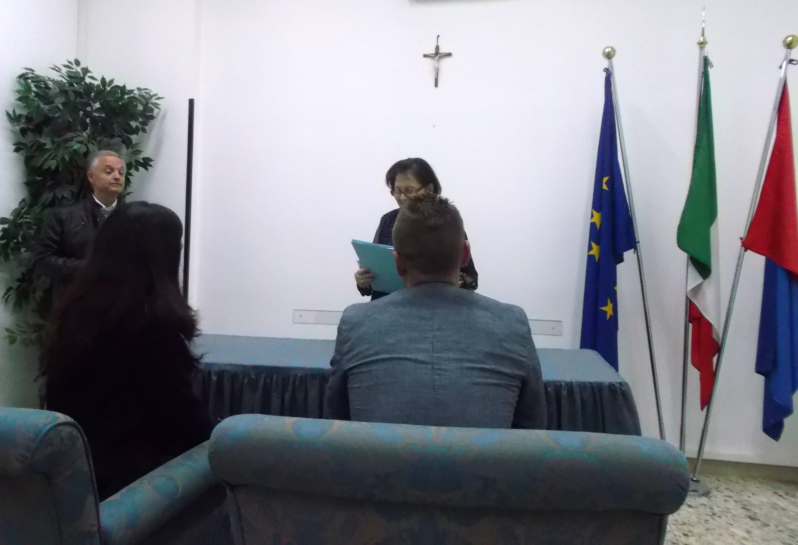 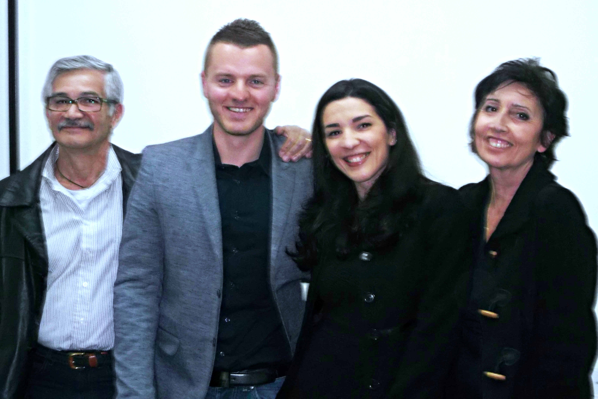 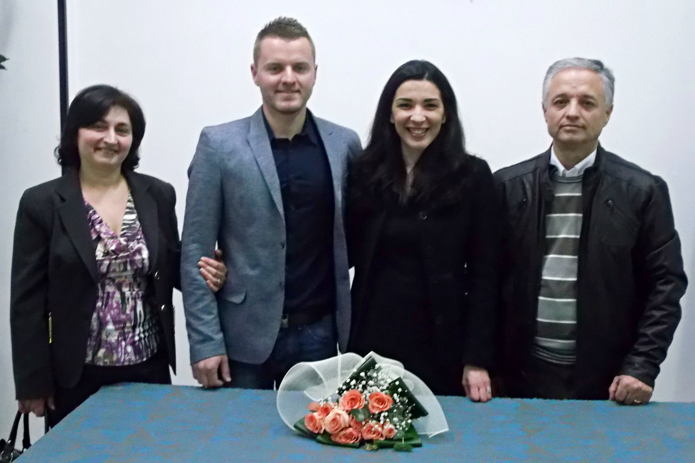 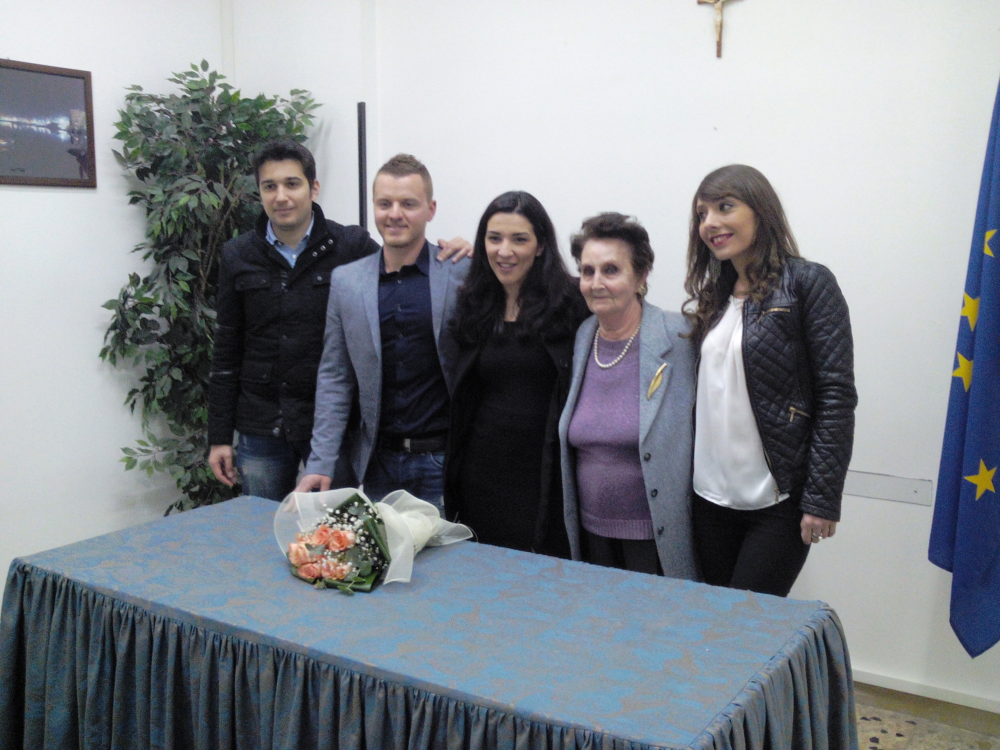